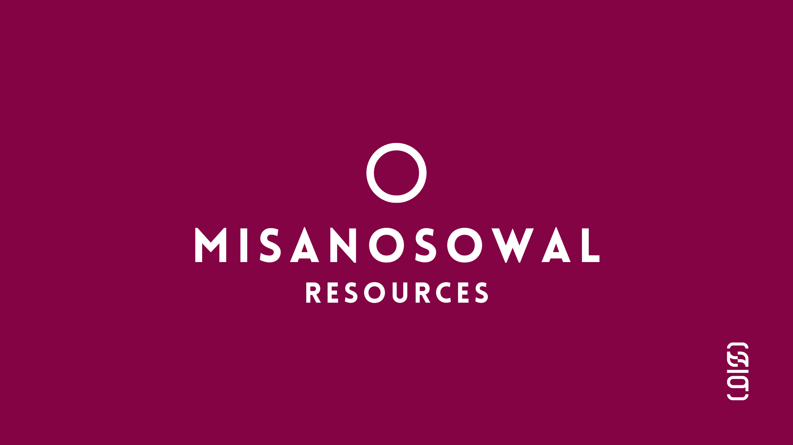

# 學習資源 Resources ✩‧₊˚
探索豐富教材、互動課程與文化資料，助您深入了解與學習臺灣原住民語言。
# 資源列表 Resource List ✩‧₊˚
以下是我們精選的學習資源，您可以根據需求點選以下連結進一步探索：
# 最新資源更新 Update ✩‧₊˚
我們不斷更新與擴充學習資源，以下是最新的資源更新記錄：
- 2025-01-01：正式上線首批學習資源，包括辭典、教材與基礎互動功能。

探索豐富教材、互動課程與文化資料，助您深入了解與學習臺灣原住民語言。
以下是我們精選的學習資源，您可以根據需求點選以下連結進一步探索：
我們不斷更新與擴充學習資源，以下是最新的資源更新記錄：